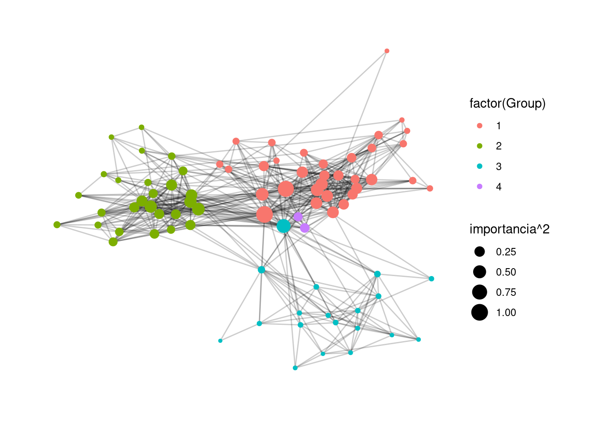
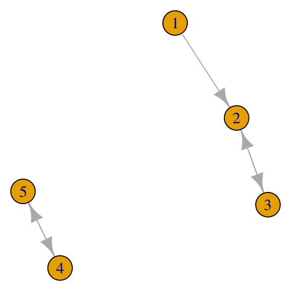

7 Pagerank y análisis de redes
7.1 Introducción
Pagerank asigna un número real a cada página de una red (web). Este número es un indicador de su importancia. Las ideas fundamentales son:
Las páginas de internet forman una red o gráfica, donde los nodos son las páginas y las aristas dirigidas son las ligas de unas páginas a otras.
La importancia de un página A depende de cuántas otras páginas apuntan a la página A. También depende de qué tan importantes sean las páginas que apuntan a A.
Cuando hacemos una búsqueda, primero se filtran las páginas que tienen el contenido de nuestra búsqueda, y después los resultados se ordenan según el pagerank de estas páginas filtradas.
¿Qué problema resuelve? En un principio, se usaron métodos como índices y recuperación de documentos usando técnicas como tf-idf. El problema es que es muy fácil que un spammer sesgue los resultados para que sus páginas tengan alto nivel de relevancia en este sentido. Así que la importancia no se juzga sólo con el contenido, sino de los votos de otras páginas importantes. Este es un sistema más difícil de engañar.
Es crucial usar la importancia de los in-links de una página; si no, sería tambíen fácil crear muchas páginas spam que apunten a otra dada para aumentar su importancia.
El Pagerank, más en general, es una medida de centralidad o importancia de los nodos de una red dirigida. Comenzaremos considerando redes más variadas (por ejemplo, redes sociales) y el concepto general de centralidad.
7.1.1 Centralidad en redes
Consideremos una red de personas, que representamos como una gráfica \(G\) no dirigida o dirigida, dependiendo del caso. Las personas son los nodos y sus relaciones se representan con aristas.
Quiséramos construir una medida de importancia o centralidad de una persona dentro de la red. Por ejemplo:
- Redes sociales de internet: las ligas representan relación de amigos, o la de seguidor. Importancia: número de amigos o seguidores (grado de entrada o salida).
- Redes de citas bibliográficas: las ligas representan quién comparte o usa la información de quién. Importancia: número de citas o usos, ser citado por alguien importante, etc.
- Red de empleados de una oficina: las ligas representan interacciones en algún periodo. Importancia: quién puede conectar de manera más inmediata a dos personas.
Ejemplo de Moviegalaxies.com: Pulp Fiction
Dos personajes están ligados si tienen interacciones en la película. El tamaño y color de los nodos dependen de su “centralidad” en la red.

Pulp fiction
(Gráfica creada con Gephi).
7.2 Tipos de redes y su representación
Una red es un conjunto de nodos conectados por algunas aristas. Las aristas pueden ser
- Dirigidas: hay un nodo origen y un nodo destino.
- No dirigidas: una arista representa una conexión simétrica entre dos nodos.
Podemos representar redes de varias maneras. Una primera manera es con una lista de pares de vértices o nodos que están conectados por una arista. Por ejemplo, para una red dirigida:
library(tidyverse)
library(tidygraph)
library(ggraph)
aristas <- tibble(from = c(1, 1, 1, 1, 2),
to = c(2, 3, 4, 5, 3))
aristas## # A tibble: 5 × 2
## from to
## <dbl> <dbl>
## 1 1 2
## 2 1 3
## 3 1 4
## 4 1 5
## 5 2 3red_tbl <- tidygraph::as_tbl_graph(aristas, directed = TRUE)
red_tbl## # A tbl_graph: 5 nodes and 5 edges
## #
## # A directed acyclic simple graph with 1 component
## #
## # Node Data: 5 × 1 (active)
## name
## <chr>
## 1 1
## 2 2
## 3 3
## 4 4
## 5 5
## #
## # Edge Data: 5 × 2
## from to
## <int> <int>
## 1 1 2
## 2 1 3
## 3 1 4
## # … with 2 more rowsQue podemos visualizar como sigue:
graficar_red_dirigida <- function(red_tbl){
ggraph(red_tbl) +
geom_edge_link(arrow = arrow(), end_cap = circle(4, 'mm')) +
geom_node_point(size = 10, colour = 'salmon') +
geom_node_text(aes(label = name)) +
theme_graph() + coord_fixed()
}
graficar_red_dirigida(red_tbl)## Using `sugiyama` as default layout
También es posible representar una red mediante una matriz de adyacencia.
La matriz de adyacencia para una red es la matriz \(A\) tal que \[A_{ij} = 1\] si existe una arista de \(i\) a \(j\). En el caso no dirigido, \(A\) es una matriz simétrica.
matriz_ad <- igraph::get.adjacency(red_tbl)
matriz_ad## 5 x 5 sparse Matrix of class "dgCMatrix"
## 1 2 3 4 5
## 1 . 1 1 1 1
## 2 . . 1 . .
## 3 . . . . .
## 4 . . . . .
## 5 . . . . .Es más conveniente representar estas matrices como matrices ralas, como veremos más adelante.
Nota de R: utilizamos el paquete tidygraph y ggraph para hacer manipulaciones de gráficas y graficación. Estos paquetes son extensiones del paquete igraph, que es el que contiene los algoritmos de visualización, procesamiento y resumen de redes.
7.3 Visualización de redes
Existen varios algoritmos para visualizar redes que revelan distintos aspectos de su estructura (ver por ejemplo ?layout en R, en el paquete igraph).
Por ejemplo, aquí construimos una red aleatoria, y hacemos un layout de nodos aleatorio:
set.seed(1234)
g <- play_erdos_renyi(n = 20, p = 0.1, directed = FALSE) |> as_tbl_graph()
ggraph(g, layout = 'randomly') + geom_edge_link() +
geom_node_point(size = 2, colour = 'salmon') +
theme_graph()
Y comparamos con la representación producida por un algoritmo basado en fuerzas.
ggraph(g, layout = 'fr') + geom_edge_link() +
geom_node_point(size = 2, colour = 'salmon') +
theme_graph()
Los algoritmos basados en fuerzas para representar redes en \(2\) o \(3\) dimensiones se basan principalmente en la siguiente idea:
- Las aristas actúan como resortes, que no permiten que nodos ligados se alejen mucho
- Los nodos tienen fuerzas de repulsión entre ellos (la analogía física es de cargas elécricas), y también a veces de gravedad entre ellos.
- El algoritmo de representación intenta minimizar la energía de la configuración del sistema de atracciones y repulsiones.
Hay muchas variaciones de estos algoritmos, por ejemplo: graphopt en igraph, fruchtermann-rheingold, kamada-kawai, gem, escalamiento multidimensional, forceAtlas, etc. Intenta mover los nodos de las siguiente gráfica para entender el funcionamiento básico de estos algoritmos:
library(visNetwork)
edges <- g |> activate(edges) |> as_tibble()
set.seed(13)
red_vis <- visNetwork(nodes = tibble(id = 1:20, label = 1:20),
edges, width = "100%") |>
visPhysics(solver ='forceAtlas2Based',
forceAtlas2Based = list(gravitationalConstant = - 50, # negativo!
centralGravity = 0.01,
springLength = 100,
springConstant = 1,
avoidOverlap = 1
))
red_vis7.3.1 Ejercicio
- Para la gráfica anterior, busca qué parámetros puedes cambiar en el algoritmo y experimenta cambiándolos (cuánta repulsión, rigidez de los resortes, número de iteraciones, etc.)
Otras familias de algoritmos intentan distintas estrategias, como los layout de círculo, estrella, para árboles, etc.
ggraph(g, layout = 'circle') +
geom_edge_link() +
geom_node_point(size = 2, colour = 'salmon') +
theme_graph()
7.4 Medidas de centralidad para redes
Como discutimos arriba, las medidas de centralidad en redes intentan capturar un concepto de importancia o conectividad de un nodo en una red. Primero comenzamos con el caso no dirigido. Medidas básicas de centralidad son
Grado o grado de entrada/salida: cuántas ligas tiene un nodo (no dirigidos, de entrada o de salida).
Betweeness: qué tan importante o único es un nodo para conectar otros pares de nodos de la red (por ejemplo, una persona con betweeness alto controla más fácilmente el flujo de información en una red social).
Cercanía: qué tan lejos en promedio están los otros nodos de la red (pues puede encontrar y conectar más fácilmente otras dos nodos en la red).
Centralidad de eigenvector/Pagerank: la centralidad de un nodo es una especie de promedio de la centralidad de sus vecinos.
7.4.1 Grado
Sea \(G\) una gráfica no dirigida, y sea \(A\) la matriz de adyacencia de \(G\). Si \(i\) es un nodo (vértice) dado, entonces su grado es
\[c_G(i)=\sum_{j\neq i} A_{i,j}.\] que cuenta cúantas aristas conectan con el nodo \(i\).
graficar_red_nd <- function(dat_g, layout = 'kk'){
ggraph(dat_g, layout = layout) +
geom_edge_link(alpha=0.2) +
geom_node_point(aes(size = importancia), colour = 'salmon') +
geom_node_text(aes(label = nombre), nudge_y = 0.2, size=3) +
theme_graph(base_family = 'sans')
}
g_grado <- g |> activate(nodes) |>
mutate(importancia = centrality_degree()) |>
mutate(nombre = 1:20)
graficar_red_nd(g_grado)
¿Qué no captura el grado como medida de centralidad?
Distancia a otros nodos
En primer lugar, por ejemplo, no captura que algunos nodos están más cercanos en promedio a los nodos de la red que otros.
g_simple <- igraph::graph(c(1, 2, 2, 3, 3, 4, 4, 5), directed = FALSE) |>
as_tbl_graph() |>
mutate(importancia = centrality_degree()) |>
mutate(nombre = LETTERS[1:5])
graficar_red_nd(g_simple)
Obsérvese en este ejemplo que el nodo \(C\) es más importante que \(D\), en el sentido de que está más cercano a los nodos de toda la red, aún cuando el grado es el mismo para ambos.
Caminos que pasan por un nodo
En la siguiente gráfica, el nodo \(G\) es importante porque es la única conexión entre dos partes de la red, y esto no lo captura el grado:
triangulo_1 <- c(1,2,2,3,3,1)
triangulo_2 <- triangulo_1 + 3
red_3 <- igraph::graph(c(triangulo_1, triangulo_2, c(7,1,7,4)), directed = FALSE) |>
as_tbl_graph() |>
mutate(importancia = centrality_degree()) |>
mutate(nombre = LETTERS[1:7])
graficar_red_nd(red_3)
Nodos conectados a otros nodos importantes
En la siguiente gráfica el nodo \(H\) tienen el mismo grado que \(F\), pero \(H\) está conectado a un nodo más importante (\(A\))
red_4 <- igraph::graph(c(2,1,3,1,4,1,5,1,2,3,6,2,1,7,1,8), directed=FALSE) |>
as_tbl_graph() |>
mutate(importancia = centrality_degree()) |>
mutate(nombre = LETTERS[1:8])
graficar_red_nd(red_4)
7.4.2 Medida de centralidad: Betweeness o Intermediación
La medida de centralidad de intermediación de un nodo \(u\) se define como: \[c_b (u) = \sum_{j<k, u\neq j,u\neq i} \frac{ g(j,k |u)}{ g(j,k)},\] donde
\(g(j,k)\) es el número de caminos más cortos distintos entre \(j\) y \(k\) y
\(g(j,k |u)\) es el número de caminos más cortos distintos entre \(j\) y \(k\) que pasan por \(u\).
\(g(j,k | u ) = 0\) cuando \(j=u\) o \(k=u\).
Los caminos que más aportan a la intermediación de un nodo \(u\) son aquellos que conectan nodos que no tienen otra alternativa más que pasar por \(u\).
Esta medida se puede normalizar poniendo (\(n\) es el total de nodos de la red) \[\overline{c}_b (i)=c_b (i)/\binom{n-1}{2},\] pues el denominador es el máximo valor de intermediación que puede alcanzar un vértice en una red de \(n\) nodos (demuéstralo).
Ejemplo
red_4 <- igraph::graph(c(2,1,3,1,4,1,5,1,2,3,6,2,2,5,1,6,6,7),
directed = FALSE) |>
as_tbl_graph() |>
mutate(importancia = centrality_betweenness()) |>
mutate(nombre = LETTERS[1:7])
graficar_red_nd(red_4) + labs(subtitle = 'Intermediación')
Por ejemplo, consideremos el nodo \(B\). Hay dos caminos más cortos de \(C\) a \(F\) (de tamaño \(2\)), y uno de ellos pasa por \(B\). De modo que los caminos de \(C\) a \(F\) aportan \(0.5\) al betweeness de \(B\). De los caminos más cortos entre \(E\) y \(D\), ninguno pasa por \(B\), así que este par de vértices aporta \(0\) al betweeness. Verifica el valor de betweeness para \(B\) haciendo los cálculos restantes:
red_4 |> as_tibble()## # A tibble: 7 × 2
## importancia nombre
## <dbl> <chr>
## 1 7.5 A
## 2 2.5 B
## 3 0 C
## 4 0 D
## 5 0 E
## 6 5 F
## 7 0 GEjemplo de grado e intermediación: Pulp Fiction
En esta red, el color es una medición de betweeness y el tamaño del nodo una medición del grado. Aunque Butch y Jules tienen grados similares, Butch tiene intermediación más alto pues provee más ligas únicas más cortas entre los personajes, mientras que la mayoría de los de Jules pasan también por Vincent.

Pulp fiction
7.4.3 Medida de centralidad: Cercanía
También es posible definir medidas de importancia según el promedio de cercanía a todos los nodos. Éste se calcula como el inverso del promedio de distancias del nodo a todos los demás.
Ejemplo
red_5 <- igraph::graph(c(2,1,3,1,4,9,5,2,2,3,6,1,7,8,
8,9,9,1,1,8,1,7),
directed = FALSE)red_5 <- red_5 |> as_tbl_graph() |>
mutate(importancia = centrality_closeness(normalized = TRUE)) |>
mutate(nombre = LETTERS[1:9])
red_5 |> activate(nodes) |> as_tibble()## # A tibble: 9 × 2
## importancia nombre
## <dbl> <chr>
## 1 0.8 A
## 2 0.571 B
## 3 0.533 C
## 4 0.381 D
## 5 0.381 E
## 6 0.471 F
## 7 0.5 G
## 8 0.571 H
## 9 0.571 Igraficar_red_nd(red_5) + labs(subtitle = 'Cercanía')
En este ejemplo, el nodo \(F\) tiene cercanía más alta que \(D\), por ejemplo, pues se conecta a un nodo bien conectado de la red (en grado y betweeness):
Ejercicio
Verifica que la cercanía de \(A\) es \(0.80\).
7.4.4 Centralidad de eigenvector
Esta medida considera que la importancia de un nodo está dado por la suma normalizada de las importancias de sus vecinos. De esta forma, es importante estar cercano a nodos importantes (como en cercanía), pero también cuenta conectarse a muchos nodos (como en grado).
- Nótese que esta es una descripción circular: para saber la importancia de un nodo, hay que saber la importancia de sus vecinos.
Consideremos el ejemplo siguiente:
red_6 <- igraph::graph(c(1,2,1,3,1,4,5,2), directed = FALSE) |>
as_tbl_graph() |> mutate(nombre = 1:5, importancia = 0)
graficar_red_nd(red_6) + theme(legend.position="none")+ labs(subtitle = 'Eigenvector')
Supongamos que las importancias de estos \(5\) nodos son \[(x_1,\ldots, x_5)\] donde \(x_i\geq 0\). Suponemos también que estas importancias están normalizadas, de forma que \(\sum_i x_i = 1\).
De acuerdo a la idea mencionada arriba, calculamos entonces cómo se ve la suma de las importancias de nodos adyacentes a cada nodo. Para el nodo uno,
\[{y_1} = x_2 + x_3 + x_4\]
para el nodo \(2\)
\[y_2 = x_1 + x_5\]
y para los siguientes nodos tendríamos \[y_3 = x_1\] \[y_4 = x_1\] \[y_5 = x_2\].
Este sistema lo podemos escribir de forma matricial, usando la matriz de adyacencia, como
\[ y = \left ( \begin{array}{rrrrr} 0 & 1 & 1 & 1 & 0 \\ 1 & 0 & 0 & 0 & 1 \\ 1 & 0 & 0 & 0 & 0 \\ 1 & 0 & 0 & 0 & 0 \\ 0 & 1 & 0 & 0 & 0 \\ \end{array} \right ) x \]
Por definición de las importancias, tenemos que normalizar este vector \(y\) para obtener importancias originales. Es decir, existe una \(\lambda\) tal que
\[\frac{1}{\lambda}y = x\]
Donde \(\lambda\geq 0\) es el factor de normalización. En resumen, \(x\geq 0\) debe satisfacer, para alguna \(\lambda > 0\), la ecuación \[A^t x = \lambda x,\]
es decir, \(x\) es un vector propio de la matriz de adyacencia con valor propio positivo.
Sin embargo, ¿cuando existe un vector \(x\geq 0\) con \(\lambda>0\) que satisfaga esta propiedad? ¿es único?
Ejercicio
Resuelve el sistema de ecuaciones de arriba y verifica que tal vector existe. ¿Cuál es el valor de lambda?
Matrices no negativas
Para entender la existencia y forma de la centralidad de eigenvector, comenzamos recordando algunos teoremas básicos de álgebra lineal. En primer lugar, tenemos:
Espectro de matrices no-negativas
Si \(A\) es una matriz no negativa, entonces:
- Existe un valor propio real no-negativo \(\lambda_0\) tal que \(\lambda_0\geq |\lambda|\) para cualquier otro valor propio \(\lambda\) de \(A\).
- Al valor propio \(\lambda_0\) está asociado al menos un vector propio \(x\) con entradas no negativas.
Nota: Parte de este teorema se puede entender observando que si \(A\) es no-negativa, entonces mapea el cono \(\{(x_1,x_2,\ldots, x_m) | x_i \geq 0\}\) dentro de sí mismo, lo que implica que debe dejar invariante alguna dirección dentro de este cono.
Si este vector propio no-negativo fuera único (hasta normalización) y distinto del vector \(0\), entonces esto nos daría un conjunto de medidas (únicas hasta normalización) \(x\) para la importancia de los nodos:
Ejemplo 1
par(mar=c(0,0,0,0)); plot(red_6, vertex.size = 40)
A_red <- igraph::get.adjacency(red_6)
A_red## 5 x 5 sparse Matrix of class "dgCMatrix"
##
## [1,] . 1 1 1 .
## [2,] 1 . . . 1
## [3,] 1 . . . .
## [4,] 1 . . . .
## [5,] . 1 . . .desc_A <- eigen(A_red)
desc_A |> map( ~ round(.x, 3))## $values
## [1] 1.848 0.765 0.000 -0.765 -1.848
##
## $vectors
## [,1] [,2] [,3] [,4] [,5]
## [1,] 0.653 -0.271 0.000 0.271 0.653
## [2,] 0.500 0.500 0.000 0.500 -0.500
## [3,] 0.354 -0.354 0.707 -0.354 -0.354
## [4,] 0.354 -0.354 -0.707 -0.354 -0.354
## [5,] 0.271 0.653 0.000 -0.653 0.271Las medida de centralidad de eigenvector da entonces, en este caso:
x <- desc_A$vectors[,1]
print(x, digits = 2)## [1] 0.65 0.50 0.35 0.35 0.27par(mar=c(0,0,0,0)); plot(red_6, vertex.size = 100*x)
Ejemplo 2
Sin embargo, puede ser que obtengamos más de un valor propio no negativo con vectores asociados no negativos, por ejemplo:
red <- igraph::graph(c(1,2,2,3,3,1,2,4,5,6), directed = FALSE)
par(mar=c(0,0,0,0)); plot(red, vertex.size=20)
A_red <- igraph::get.adjacency(red)
A_red## 6 x 6 sparse Matrix of class "dgCMatrix"
##
## [1,] . 1 1 . . .
## [2,] 1 . 1 1 . .
## [3,] 1 1 . . . .
## [4,] . 1 . . . .
## [5,] . . . . . 1
## [6,] . . . . 1 .Nótese que los eigenvectores \(1\) y \(2\) son no negativos, y están asociados a vectores propios no negativos:
desc_A <- eigen(A_red)
desc_A|> map( ~ round(.x, 3))## $values
## [1] 2.170 1.000 0.311 -1.000 -1.000 -1.481
##
## $vectors
## [,1] [,2] [,3] [,4] [,5] [,6]
## [1,] -0.523 0.000 -0.368 0.000 -0.707 0.302
## [2,] -0.612 0.000 0.254 0.000 0.000 -0.749
## [3,] -0.523 0.000 -0.368 0.000 0.707 0.302
## [4,] -0.282 0.000 0.815 0.000 0.000 0.506
## [5,] 0.000 0.707 0.000 0.707 0.000 0.000
## [6,] 0.000 0.707 0.000 -0.707 0.000 0.000Nota: si encontramos un vector propio \(x\) con entradas negativas o cero, podemos convertirlo a un vector propio con entradas no negativas tomando \(-x\). Los vectores propios debemos considerarlos módulo una constante multiplicativa, y los vectores particulares que se encuentran dependen del algoritmo.
En este caso, la medida de centralización dependería de qué peso le ponemos al primer vector propio vs el segundo vector propio. En este ejemplo, la unicidad no sucede pues la red asociada no es conexa.
Matrices irreducibles y gráficas fuertemente conexas
¿Cuándo podemos garantizar unicidad en la solución de \(Ax=\lambda x\) con \(\lambda >0\) y que \(x\) sea un vector no-negativo distinto de \(0\)?
Sea \(A\) la matriz de adyacencia de una gráfica no dirigida.
- Si la gráfica asociada a \(A\) es fuertemente conexa (existen caminos entre cualquier par de vértices) entonces decimos que \(A\) es irreducible.
- Podemos dar también una definición de irreducibilidad sólo en términos de \(A\): \(A\) es irreducible cuando para toda \(i,j\) existe \(m\geq 0\) tal que \((A^m)_{i,j} > 0\).
Nota: discute por qué estas dos definiciones son equivalentes.
Utilizaremos uno de los teoremas más importantes del álgebra lineal:
Teorema de Perron-Frobenius
Si \(A\) es una matriz no-negativa irreducible, entonces
- Existe un valor propio real positivo simple \(\lambda_0\) tal que \(\lambda_0 > |\lambda|\) para cualquier otro valor propio \(\lambda\) de \(A\), asociado a un vector propio \(x\) con entradas positivas.
- No existe ningún otro vector propio con entradas no negativas que no sea paralelo a \(x\).
Y entonces podemos definir una medida única de centralidad módulo una constante multiplicativa.
Ejemplo: facultad de tres universidades
install.packages('igraphdata')## Installing package into '/usr/local/lib/R/site-library'
## (as 'lib' is unspecified)library("igraphdata")
data("UKfaculty")
ukf.und <- igraph::as.undirected(UKfaculty)
head(dat_1 <- igraph::get.data.frame((ukf.und)))## from to weight
## 1 1 4 4
## 2 3 4 1
## 3 5 6 1
## 4 5 7 2
## 5 6 7 28
## 6 3 9 1grupo <- igraph::get.vertex.attribute(UKfaculty, 'Group')
nodos <- data.frame(id = 1:length(grupo))
visNetwork(nodos, dat_1, width = "100%") |>
visPhysics(solver ='forceAtlas2Based',
forceAtlas2Based = list(gravitationalConstant = -10),
stabilization = TRUE)Ahora calculamos centralidad de eigenvector.
A <- igraph::get.adjacency(ukf.und)
desc_A <- eigen(as.matrix(A))
desc_A$values |> map_dbl( ~ round(.x, 3))## [1] 19.284 13.549 8.527 6.019 5.204 4.560 4.314 3.629 3.521 3.050
## [11] 2.966 2.682 2.395 2.316 2.169 2.164 1.869 1.793 1.672 1.457
## [21] 1.314 1.263 1.119 0.912 0.833 0.767 0.677 0.629 0.609 0.537
## [31] 0.406 0.353 0.229 0.109 0.070 -0.108 -0.214 -0.297 -0.323 -0.533
## [41] -0.609 -0.677 -0.752 -0.892 -0.913 -0.987 -1.087 -1.178 -1.188 -1.247
## [51] -1.349 -1.406 -1.495 -1.553 -1.660 -1.691 -1.803 -1.956 -2.024 -2.179
## [61] -2.210 -2.268 -2.371 -2.435 -2.611 -2.669 -2.828 -2.893 -3.016 -3.176
## [71] -3.262 -3.336 -3.625 -3.805 -4.082 -4.351 -4.481 -4.888 -5.214 -5.341
## [81] -5.982vec <- as.numeric(desc_A$vector[,1])
desc_A$values[1]## [1] 19.28427e_vector <- -vec
qplot(e_vector,xlab="Primer vector propio",main="Importancia por centralidad de eigenvector")+theme(plot.title = element_text(hjust=0.5))## `stat_bin()` using `bins = 30`. Pick better value with `binwidth`.
colores <- colorRampPalette(c('red','green'))
colores_1 <- colores(length(e_vector))
nodos <- data.frame(id=1:length(vec), value = e_vector,
color = colores_1[rank(e_vector)])
visNetwork(nodos, dat_1 |> select(-weight) |> mutate(colour = "#999999"),
width = "100%") |>
visPhysics(solver ='forceAtlas2Based',
stabilization = TRUE) |>
visNodes(value = 1, scaling = list(min = 1, max = 200))Podemos calcular también usando gggraph:
uk_tbl <- ukf.und |> as_tbl_graph() |>
activate(nodes) |>
mutate(nombre = row_number()) |>
mutate(importancia = centrality_eigen())
ggraph(uk_tbl, layout = 'fr') +
geom_edge_link(alpha=0.2) +
geom_node_point(aes(size = importancia^2, colour = factor(Group))) +
theme_graph(base_family = 'sans')
7.5 Gráficas dirigidas
Estos conceptos pueden aplicarse también para gráficas dirigidas, cuando hay un concepto de dirección en las relaciones de los nodos.
- In degree, out degree.
- Betweenness puede definirse en función de caminos dirigidos.
- Cercanía también (in closeness, out closeness).
- Centralidad de eigenvector: misma idea, pero la matriz \(A\) no es simétrica. En este caso, \(A_{ij} = 1\) cuando hay una arista que va de \(i\) a \(j\).
Consideremos en particular cómo se calcula la centralidad de eigenvector para una red dirigida.
set.seed(28011)
red_6 <- igraph::erdos.renyi.game(5, p.or.m=0.5, directed=T)
par(mar=c(0,0,0,0))
plot(red_6, vertex.size=40)
Su matriz de adyacencia es no simétrica
A <- igraph::get.adjacency(red_6)
A## 5 x 5 sparse Matrix of class "dgCMatrix"
##
## [1,] . . 1 1 1
## [2,] 1 . 1 . 1
## [3,] . 1 . . 1
## [4,] 1 1 . . .
## [5,] 1 1 . 1 .Para este ejemplo, las ecuaciones de importancia son como sigue. Para el nodo \(1\), \[\lambda x_1 = x_2 + x_4 + x_5\] para el nodo 5, por ejemplo, es \[\lambda x_5 = x_1 + x_2 + x_3\] y así sucesivamente.
Obsérvese que en cada ecuación se consideran las aristas entrantes, de forma que la ecuación del nodo \(1\) requiere la columna \(1\) de la matriz de adyacencia, el nodo \(2\) la columna \(2\), etc. Es decir, la ecuación que debemos resolver es
\[A^t x = \lambda x\]
En el ejemplo anterior,
desc_A <- eigen(t(as.matrix(A)))
v <- desc_A$vectors[,1]
print(as.numeric(v / sum(v)), digits = 2)## [1] 0.23 0.21 0.16 0.17 0.23¿Cuándo podemos garantizar unicidad en la solución de \(A^tx=\lambda x\) con \(\lambda > 0\)?
Sea \(A\) la matriz de adyacencia de una gráfica dirigida. Igual que en el caso de gráficas no dirigidas:
- Si la gráfica asociada a \(A\) es fuertemente conexa (para cualquier par de vértices hay caminos \(i\to j\) y \(j\to i\)) entonces decimos que \(A\) es irreducible.
- Igualmente, \(A\) es irreducible si y sólo si para cualquier \(i,j\) existe una \(m>0\) tal que \((A^m)_{i,j}>0\).
Y podemos igualmente aplicar Perron-Frobenius, de donde concluimos:
Y entonces podemos definir una medida única de centralidad módulo una constante multiplicativa.
Ejemplos: ¿qué pasa si \(A\) es no reducible?
Hay distintas maneras en que la matriz no es reducible, y cada una de ellas contradice algún aspecto del teorema de Perron Frobenius.
Por ejemplo, si la gráfica es conexa pero no fuertemente conexa, podemos tener vectores propios no positivos (algunos nodos resultan con peso \(0\)):
red <- igraph::graph(c(1,2,2,3,3,4,4,3), directed = TRUE)
par(mar=c(0,0,0,0)); plot(red, vertex.size = 40)
A_red <- as.matrix(igraph::get.adjacency(red))
A_red## [,1] [,2] [,3] [,4]
## [1,] 0 1 0 0
## [2,] 0 0 1 0
## [3,] 0 0 0 1
## [4,] 0 0 1 0eigen(t(A_red)) |> map( ~ round(.x, 2))## $values
## [1] 1 -1 0 0
##
## $vectors
## [,1] [,2] [,3] [,4]
## [1,] 0.00 0.00 0.00 0.00
## [2,] 0.00 0.00 0.71 -0.71
## [3,] 0.71 0.71 0.00 0.00
## [4,] 0.71 -0.71 -0.71 0.71Si la gráfica es disconexa, podemos tener valores propios no simples con distintos vectores propios no negativos:
red <- igraph::graph(c(1,2,2,3,3,2,4,5,5,4), directed = TRUE)
par(mar=c(0,0,0,0)); plot(red, vertex.size = 20)
A_red <- as.matrix(igraph::get.adjacency(red))
A_red## [,1] [,2] [,3] [,4] [,5]
## [1,] 0 1 0 0 0
## [2,] 0 0 1 0 0
## [3,] 0 1 0 0 0
## [4,] 0 0 0 0 1
## [5,] 0 0 0 1 0eigen(t(A_red))|> map( ~ round(.x, 2))## $values
## [1] 1 -1 1 -1 0
##
## $vectors
## [,1] [,2] [,3] [,4] [,5]
## [1,] 0.00 0.00 0.00 0.00 0.71
## [2,] 0.00 0.00 0.71 -0.71 0.00
## [3,] 0.00 0.00 0.71 0.71 -0.71
## [4,] 0.71 -0.71 0.00 0.00 0.00
## [5,] 0.71 0.71 0.00 0.00 0.00O ningún valor propio positivo:
red <- igraph::graph(c(1, 2, 2, 3), directed = TRUE)
par(mar=c(0,0,0,0)); plot(red, vertex.size = 20)
A_red <- as.matrix(igraph::get.adjacency(red))
A_red## [,1] [,2] [,3]
## [1,] 0 1 0
## [2,] 0 0 1
## [3,] 0 0 0eigen(t(A_red)) |> map( ~ round(.x, 2))## $values
## [1] 0 0 0
##
## $vectors
## [,1] [,2] [,3]
## [1,] 0 0 0
## [2,] 0 0 0
## [3,] 1 -1 17.6 Pagerank
Pagerank es una medida similar a la centralidad de eigenvector:
- La importancia de una página (nodo) es un promedio ponderado de las importancias de otras páginas que apuntan (ligan) hacia ella.
- Diferencia: usamos gráficas dirigidas, y distribuimos el peso de las aristas dependiendo de cuántas ligas hacia afuera tiene una página: es decir, la importancia de una página se diluye entre el número de ligas a sus hijos.
Esto tiene sentido pues si tenemos una página importante que apunta a pocas páginas, debe dar más importancia a estas pocas páginas que si apuntara a muchas páginas.
Para una red dirigida de páginas de internet, definimos entonces su matriz de transición \(M\) como sigue:
- \(M_{ij} =1/k\) si la página \(i\) tiene \(k\) ligas hacia afuera, y una de ellas va a la página \(j\)
- \(M_{ij} = 0\) en otro caso.
Intentaremos hacer algo similar a la centralidad de eigenvector, pero usando la matriz de transición en lugar de la matriz de adyacencia.
Ejemplo
red_p <- igraph::graph(c(1,2,1,4,1,3,2,1,2,4,3,1,4,3,2,3))
par(mar=c(0,0,0,0))
plot(red_p, vertex.size=40, edge.curved=T, edge.arrow.size=0.5)
La matriz de adyacencia no necesariamente es simétrica, pues la gráfica es dirigida:
A <- igraph::get.adjacency(red_p)
A## 4 x 4 sparse Matrix of class "dgCMatrix"
##
## [1,] . 1 1 1
## [2,] 1 . 1 1
## [3,] 1 . . .
## [4,] . . 1 .Y calculamos la matriz M, que es la matriz \(A\) con los renglones normalizados por su suma:
M <- A / Matrix::rowSums(A)
M## 4 x 4 sparse Matrix of class "dgCMatrix"
##
## [1,] . 0.3333333 0.3333333 0.3333333
## [2,] 0.3333333 . 0.3333333 0.3333333
## [3,] 1.0000000 . . .
## [4,] . . 1.0000000 .7.6.1 La matriz \(M\) es estocástica
A la matriz \(M\) le llamamos una matriz estocástica, pues cada uno de sus renglones son no negativos y suman \(1\). Bajo este supuesto, es posible demostrar otra versión del teorema de Perron Frobenius:
Principio del Pagerank
Supongamos que \(M\) es irreducible, que en el caso dirigido quiere decir que la red es fuertemente conexa: existe un camino dirigido entre cualquier par de vértices.
- Entonces el valor propio de Perron-Frobenius (simple) para \(M^t\) es \(\lambda_0=1\), y el único vector propio no negativo (módulo longitud) es estrictamente positivo y asociado a \(\lambda_0=1\).
Esto implica que si \(r\) es el vector de importancias según pagerank, entonces \(r\) debe satisfacer
\[r_j = \sum_{i\to j} \frac{r_i}{d_i}\]
donde la suma es sobre las ligas de entrada a \(j\), y \(d_i\) es el grado de salida del nodo \(i\) (dividimos la importancia de \(r_i\) sobre todas sus aristas de salida). En forma matricial, esto se escribe como: \[M^tr = r.\]Ejercicio
Escribe las ecuaciones de las dos formas mostradas arriba para la red
red_p ## IGRAPH 59d0d14 D--- 4 8 --
## + edges from 59d0d14:
## [1] 1->2 1->4 1->3 2->1 2->4 3->1 4->3 2->3Ejemplo: pagerank simple
decomp <- eigen(t(as.matrix(M)))
decomp## eigen() decomposition
## $values
## [1] 1.0000000+0.0000000i -0.3333333+0.4714045i -0.3333333-0.4714045i
## [4] -0.3333333+0.0000000i
##
## $vectors
## [,1] [,2] [,3] [,4]
## [1,] 0.6902685+0i 0.7071068+0.0000000i 0.7071068+0.0000000i 7.071068e-01+0i
## [2,] 0.2300895+0i -0.2357023-0.3333333i -0.2357023+0.3333333i -7.071068e-01+0i
## [3,] 0.6135720+0i -0.1571348+0.4444444i -0.1571348-0.4444444i -2.919335e-16+0i
## [4,] 0.3067860+0i -0.3142697-0.1111111i -0.3142697+0.1111111i -3.184729e-16+0ivec_1 <- abs(as.numeric(decomp$vector[,1]))
vec_1## [1] 0.6902685 0.2300895 0.6135720 0.3067860round(vec_1/sum(vec_1), 2)## [1] 0.38 0.12 0.33 0.17par(mar=c(0,0,0,0))
plot(red_p, vertex.size=100*vec_1,
edge.curved=T, edge.arrow.size=0.5)
¿Por qué \(1\) tiene mayor importancia que \(3\)? Nótese que el nodo \(3\) tiene mayor grado que \(1\). La razón de que el pagerank de \(1\) es mayor que el de \(3\) es que la importancia del nodo \(1\) se diluye pues tiene grado \(3\) de salida, mientras que toda la importancia de \(3\) se comunica al nodo \(1\).
7.6.2 Primeras dificultades
¿Qué puede fallar cuando queremos encontrar el pagerank de un gráfica que representa sitios de internet, por ejemplo?
- Si existen callejones sin salida la matriz \(M\) no es estocástica, pues tiene un renglón de ceros - no podemos aplicar la teoría de arriba. Por ejemplo, la siguiente matriz no tiene un valor propio igual a \(1\) (conclusión invalidada: hay un valor propio igual a \(1\)):
red_p <- igraph::graph(c(1,2,2,1,1,3))
par(mar=c(0,0,0,0)); plot(red_p, vertex.size=30, edge.curved=T,edge.arrow.size=0.5)
A <- igraph::get.adjacency(red_p)
M <- t(scale(t(as.matrix(A)), center=FALSE, scale=apply(A,1,sum)))
# ponemos cero porque ni siquiera se puede normalizar:
M[3, ] <- 0
eigen(t(M))## eigen() decomposition
## $values
## [1] 0.7071068 -0.7071068 0.0000000
##
## $vectors
## [,1] [,2] [,3]
## [1,] 0.7071068 0.7071068 0
## [2,] 0.5000000 -0.5000000 0
## [3,] 0.5000000 -0.5000000 1- Si existen trampas de telaraña (spider traps) entonces la matriz \(M\) es estocástica, pero las soluciones concentran toda la importancia en la trampa (en este caso consiste de los nodos \(1\) y \(2\)) (conclusión invalidada: el vector de importancias asociado al eigenvalor \(1\) es positivo).
red_p <- igraph::graph(c(1,2,2,1,3,1,3,4,4,5,5,3))
par(mar=c(0,0,0,0)); plot(red_p, vertex.size=30, edge.curved=T,edge.arrow.size=0.5)
A <- igraph::get.adjacency(red_p)
M <- t(scale(t(as.matrix(A)), center = FALSE, scale = apply(A,1,sum)))
eigen(t(M))## eigen() decomposition
## $values
## [1] 1.0000000+0.0000000i -1.0000000+0.0000000i 0.7937005+0.0000000i
## [4] -0.3968503+0.6873648i -0.3968503-0.6873648i
##
## $vectors
## [,1] [,2] [,3] [,4]
## [1,] 0.7071068+0i -0.7071068+0i 0.4794851+0i 0.0242710-0.1851728i
## [2,] 0.7071068+0i 0.7071068+0i 0.6041134+0i -0.2173362+0.0901689i
## [3,] 0.0000000+0i 0.0000000+0i -0.4470916+0i 0.6699710+0.0000000i
## [4,] 0.0000000+0i 0.0000000+0i -0.2816501+0i -0.2110276-0.3655106i
## [5,] 0.0000000+0i 0.0000000+0i -0.3548568+0i -0.2658782+0.4605145i
## [,5]
## [1,] 0.0242710+0.1851728i
## [2,] -0.2173362-0.0901689i
## [3,] 0.6699710+0.0000000i
## [4,] -0.2110276+0.3655106i
## [5,] -0.2658782-0.4605145i- La red puede ser disconexa. Por ejemplo, cuando hay dos componentes irreducibles, existe más de un vector propio asociado al valor propio \(1\) (conclusión invalidada: la solución es única y el valor propio \(1\) es simple), así que hay tantas soluciones como combinaciones lineales de los eigenvectores que aparecen:
red_p <- igraph::graph(c(1,2,2,3,3,1,4,5,5,6,6,5,6,4))
par(mar=c(0,0,0,0)); plot(red_p, vertex.size=30,
edge.curved=T,edge.arrow.size=0.5)
A <- igraph::get.adjacency(red_p) |> as.matrix()
M <- t(scale(t(A), center=FALSE, scale=apply(A,1,sum)))
M## [,1] [,2] [,3] [,4] [,5] [,6]
## [1,] 0 1 0 0.0 0.0 0
## [2,] 0 0 1 0.0 0.0 0
## [3,] 1 0 0 0.0 0.0 0
## [4,] 0 0 0 0.0 1.0 0
## [5,] 0 0 0 0.0 0.0 1
## [6,] 0 0 0 0.5 0.5 0
## attr(,"scaled:scale")
## [1] 1 1 1 1 1 2sol <- eigen(t(M))
sol## eigen() decomposition
## $values
## [1] 1.0+0.0000000i -0.5+0.8660254i -0.5-0.8660254i 1.0+0.0000000i
## [5] -0.5+0.5000000i -0.5-0.5000000i
##
## $vectors
## [,1] [,2] [,3] [,4]
## [1,] 0.0000000+0i 0.5773503+0.0i 0.5773503+0.0i -0.5773503+0i
## [2,] 0.0000000+0i -0.2886751-0.5i -0.2886751+0.5i -0.5773503+0i
## [3,] 0.0000000+0i -0.2886751+0.5i -0.2886751-0.5i -0.5773503+0i
## [4,] 0.3333333+0i 0.0000000+0.0i 0.0000000+0.0i 0.0000000+0i
## [5,] 0.6666667+0i 0.0000000+0.0i 0.0000000+0.0i 0.0000000+0i
## [6,] 0.6666667+0i 0.0000000+0.0i 0.0000000+0.0i 0.0000000+0i
## [,5] [,6]
## [1,] 0.0000000+0.0000000i 0.0000000+0.0000000i
## [2,] 0.0000000+0.0000000i 0.0000000+0.0000000i
## [3,] 0.0000000+0.0000000i 0.0000000+0.0000000i
## [4,] 0.3535534+0.3535534i 0.3535534-0.3535534i
## [5,] 0.3535534-0.3535534i 0.3535534+0.3535534i
## [6,] -0.7071068+0.0000000i -0.7071068+0.0000000iround(sol$values,2)## [1] 1.0+0.00i -0.5+0.87i -0.5-0.87i 1.0+0.00i -0.5+0.50i -0.5-0.50ivec <- sol$vectors[,abs(sol$values-1) < 1e-8]
Re(vec)## [,1] [,2]
## [1,] 0.0000000 -0.5773503
## [2,] 0.0000000 -0.5773503
## [3,] 0.0000000 -0.5773503
## [4,] 0.3333333 0.0000000
## [5,] 0.6666667 0.0000000
## [6,] 0.6666667 0.0000000En términos de nuestra solución para dar importancia de páginas:
- No es razonable que nuestra solución concentre toda la importancia en spider traps.
- Si la gráfica es disconexa no podemos dar importancia relativa a las componentes resultantes.
- Si hay callejones sin salida entonces nuestra formulación no sirve.
Para encontrar una solución, podemos pensar en el proceso estocástico asociado a esta formulación de pagerank.
7.6.3 El proceso estocástico (cadena de Markov) asociado al Pagerank, versión simple
Podemos interpretar este proceso mediante una cadena de Markov. Consideramos una persona que navega al azar en nuestra red (haciendo click en las ligas disponibles en cada nodo):
- Comienza en una página tomada al azar (equiprobable).
- Cada vez que llega a una página, escoge al azar alguna de las páginas ligadas en su página actual y navega hacia ella.
- Suponemos por el momento que no hay callejones sin salida (estos evitan que pueda saltar a otro lado).
La pregunta que queremos contestar: ¿cuál es la probabilidad que en distintos momentos el navegador aleatorio se encuentre en una página dada? Claramente páginas que tienen muchas ligas de entrada (son importantes) tendrán más visitas, y más aún si estas ligas de entrada provienen de nodos con muchas ligas de entrada (es decir, a su vez son importantes). Sin embargo, es necesario hacer algunos refinamientos si queremos contestar de manera simple esta pregunta.
Denotamos por \(X_1, X_2,\ldots\) la posición del navegador en cada momento del tiempo. Cada \(X_i\) es una variable aleatoria que toma valores en los nodos \(\{1,2,\ldots,n\}\).
- \(X_1, X_2,\ldots\) es un proceso estocástico discreto en tiempo discreto.
- Para determinar un proceso estocástico, debemos dar la distribución conjunta de cualquier subconjunto \(X_{s_1},X_{s_2},\ldots, X_{s_k}\) de variables. En este caso, la posición en \(s+1\) sólo depende de la posición en el momento \(s\), de forma que basta con especificar \[P(X_{s+1}=j\vert X_s=i) = P_{ij}, \] para cada par de páginas \(i\) y \(j\).
7.6.4 Matriz de transición
Ahora podemos ver que
- Si hay una liga de \(i\) a \(j\), entonces \(P_{ij}=1/k(i)\), donde \(k(i)\) es el número de ligas salientes de \(i\).
- Si no hay liga de \(i\) a \(j\), entonces \(P_{ij}=0\).
Es claro que \(P\) es igual a la matriz \(M\) que definimos con anterioridad.
7.6.5 Distribución de equilibrio (versión simple)
La matriz \(P\) es estocástica. Si suponemos que \(P\) es irreducible (la gráfica es fuertemente conexa), entonces por la teoría que vimos arriba existe un vector \(\pi > 0\) tal que \(P^t\pi = \pi\).
Ahora podemos interpretar este vector en términos del navegador aleatorio:
- En términos del modelo del navegador aleatorio, ¿ qué significa entonces que un vector \(\pi\) satisfaga \(P^t \pi = \pi\), con \(\pi \geq 0\)?
Suponemos \(\pi\) normalizado por la suma: \(\sum_i \pi_i=1\).
- Significa que si escogemos un estado al azar con probabilidad \(\pi\), entonces, después de un salto, las probabilidades de encontrar al navegador en cada estado está dado también por \(\pi\).
- Igualmente, la probabilidad de encontrar al navegador en cualquier momento en el estado \(i\) es igual a \(\pi_i\).
- Por esta razón, a \(\pi\) se le llama una distribución de equilibro para el proceso del navegador aleatorio.
7.6.6 Distribución de equilibrio y probabilidades a largo plazo
Sin embargo, en un principio no conocemos la distribución de equilibrio \(\pi\). Lo que haríamos sería escoger un nodo al azar y comenzar a navegar desde ahí, o quizá empezaríamos en un nodo fijo, por ejemplo, el \(1\), y nuestra pregunta sigue siendo ¿cuál es la probabilidad que en distintos momentos el navegador aleatorio se encuentre en una página dada?
En primer lugar, necesitamos el supuesto de conexidad fuerte (irreducibilidad), pues en otro caso los lugares donde puede estar el navegador aleatorio dependen de dónde empezo, y la respuesta es más complicada. Veremos que además, necesitamos un supuesto de aperiodicidad, pues ciclos periódicos en la red puede forzar a que sólo en ciertos momentos sean permitidos ciertos estados, otra vez, dependiendo de dónde empezó el navegador aleatorio.
Requerimos entonces:
- Conexidad fuerte (irreducibilidad)
- Aperiodicidad
Veremos ahora por qué la periodicidad puede ser un problema.
Ejemplo: periodicidad
Consideremos este ejemplo fuertemente conexo (irreducible), con un ciclo de tamaño \(3\):
red_p <- igraph::graph(c(1,2,2,3,3,1))
par(mar=c(0,0,0,0)); plot(red_p, vertex.size=30, edge.curved=T,edge.arrow.size=0.5)
A <- igraph::get.adjacency(red_p)
M <- t(scale(t(as.matrix(A)), center=FALSE, scale=apply(A,1,sum)))
M## [,1] [,2] [,3]
## [1,] 0 1 0
## [2,] 0 0 1
## [3,] 1 0 0
## attr(,"scaled:scale")
## [1] 1 1 1Y notamos que si comenzamos en el estado uno, la probabilidad de estar en cada estado al tiempo \(2\) es
t(M) %*% c(1,0,0)## [,1]
## [1,] 0
## [2,] 1
## [3,] 0En el tiempo \(3\):
t(M) %*% t(M) %*% c(1,0,0)## [,1]
## [1,] 0
## [2,] 0
## [3,] 1En el tiempo \(4\):
t(M) %*% t(M) %*% t(M) %*% c(1,0,0)## [,1]
## [1,] 1
## [2,] 0
## [3,] 0y así sucesivamente, de manera que las probabilidades de visita a cada nodo dependen siempre fuertemente del tiempo. La solución a nuestra pregunta de dónde estará el navegador aleatorio al tiempo \(t\) no es tan simple de formular.
En este ejemplo, vemos que el problema son estructuras periódicas en la red del navegador aleatorio. Veremos ahora cómo lidiar con este problema.
7.6.7 Matriz de transición a \(k\) pasos
Recordamos que la matriz \((P)^k\) da las probabilidades de transición a \(k\) pasos.
Por ejemplo, para \(k=2\) tenemos la probabiildad de pasar de \(i\) a \(j\) en dos pasos es igual a (probabilidad total):
\[P(X_3=j|X_1=i) =\sum_k P(X_3=j|X_2=k, X_1=i) P(X_2=k|X_1=i)\]
Por la propiedad de Markov, podemos simplificar
\[P(X_3=j|X_1=i) =\sum_k P(X_3=j|X_2=k) P(X_2=k|X_1=i)\]
y si sustituimos \(P\)
\[P(X_3=j|X_1=i) =\sum_k P_{i,k} P_{k,j}. \]
Como el lado derecho es la componente \(i,j\) de \(P^2\), tenemos que \(P^2\) da las probabilidades de transición en \(2\) pasos.
Como ejercicio, calcula e interpreta \(P^2\) para el ejemplo anterior.
Cadenas aperiódicas
Decimos que \(P\) irreducible es aperiódica cuando \(P^{k_0}>0\) para alguna \(k_0\) suficientemente grande.Nótese que en el ejemplo anterior \(P\) no es aperiódica. Con esta condición (no importa en qué estado estamos al tiempo \(k_0\) el navegador puede estar en cualquier estado), podemos dar una respuesta más simple a la pregunta acerca de las probabilidades de largo plazo de la cadena:
Distribución a largo plazo
Si \(P\) es una matriz irreducible y aperiódica, y \(\pi\) es su distribución de equilibrio, entonces \[\lim_{n\to \infty} P(X_n=i) = \pi_i,\] independientemente de la distribución o nodo inicial.De esta forma tenemos que:
Sea \(v\) una distribución inicial sobre los estados (cualquiera). Entonces, si \(P\) es irreducible y aperiódica, \[(P^n)^t v \to \pi\] cuando \(n\to \infty\).
Lo cual nos da el algoritmo básico para encontrar la importancia de Pagerank dada por la distribución de equilibrio:
Método de potencias para pagerank simple
Tomamos \(v\) una distribución arbitraria (por ejemplo equidistribuida sobre los estados). Ponemos \(v_1=v\) e iteramos \[v_{n+1} = M^t v_{n}\] hasta que \(||v_{n+1} -v_{n}||<\epsilon.\)Veremos que este algoritmo simple es escalable a problemas muy grandes, pues sólo involucra multiplicar por una matriz que típicamente es rala.
7.6.8 Pagerank: teletransportación/perturbación de la matriz \(M\)
Para que funcione este algoritmo, como vimos antes, tenemos que lidiar con los problemas que vimos arriba (spider traps, callejones sin salidas, falta de conexidad, periodicidad).
La solución es relativamente simple: fijamos una \(\alpha\) cercana a uno. A cada tiempo:
- Con probabilidad \(\alpha\), el navegador escoge alguno de las ligas de salida y brinca (como en el proceso original),
- Sin embargo, con probabilidad \(1-\alpha\), el navegador se teletransporta a un nodo escogido al azar (equiprobable), de todos los nodos posibles.
- Si el navegador está en un callejón sin salida, siempre se teletransporta como en el inciso anterior.
Esta alteración del proceso elimina spider traps, callejones sin salidas, disconexiones y periodicidad.
Ahora construimos la matriz \(M_1\) de este proceso. Sea \(M\) la matriz original, que suponemos por el momento no tiene callejones sin salida.
¿Cómo se ven las nuevas probabildades de transición? Si \(i,j\) son nodos, \(n\) es el número total de nodos, tenemos simplemente (si \(i\) no es spider-trap):
\[(M_1)_{i,j} = \alpha M_{ij} + (1-\alpha)\frac{1}{n}\]
Esto es por probabilidad total: la probabilidad de ir de \(i\) a \(j\) dada teletransportación es \(1/n\), y la probabilidad de ir de \(i\) a \(j\) dado que no hubo teletransportación es \(M_{ij}\) (que puede ser cero). La probabilidad total se calcula promediando estas dos probabilidades según la probabilidad de teletransportación o no.
Si \(i\) es un spider-trap, entonces ponemos simplemente \[(M_1)_{i,j} = 1/n\]
- Idea: La matriz \(M_1\) estocástica es positiva, de modo que automáticamente es irreducible y aperiódica.
Tomando \(\alpha=0.85\) obtenemos por ejemplo para nuestra matriz \(M\) anterior:
red.p <- igraph::graph(c(1,2,2,3,3,1,2,3,3,2,4,5,5,4))
par(mar=c(0,0,0,0)); plot(red.p, vertex.size=30, edge.curved=T,edge.arrow.size=0.5)
A <- igraph::get.adjacency(red.p)
M <- t(scale(t(as.matrix(A)), center=FALSE, scale=apply(A,1,sum)))
unos <- rep(1,nrow(M))
alpha <- 0.85
M.1 <- alpha*M + (1-alpha)*unos%*%t(unos)/nrow(M)
M.1## [,1] [,2] [,3] [,4] [,5]
## [1,] 0.030 0.880 0.03 0.03 0.03
## [2,] 0.030 0.030 0.88 0.03 0.03
## [3,] 0.455 0.455 0.03 0.03 0.03
## [4,] 0.030 0.030 0.03 0.03 0.88
## [5,] 0.030 0.030 0.03 0.88 0.03
## attr(,"scaled:scale")
## [1] 1 2 2 1 1sol <- eigen(t(M.1))
sol$values## [1] 1.000+0.000i -0.850+0.000i 0.850+0.000i -0.425+0.425i -0.425-0.425ias.numeric(sol$vectors[,1])## [1] 0.2828726 0.5233143 0.5106595 0.4389488 0.4389488Ejercicio
Verifica que la matriz \(M_1\) construida arriba es en realidad una matriz estocástica.
No es buena idea preprocesar desde el principio la matriz \(M\) para evitar estos casos (la matriz \(M\) es típicamente rala, pues hay relativamente pocas ligas en cada página comparado con el total de nodos, y no queremos llenar los renglones igual a cero con una cantidad fija). En lugar de eso, podemos hacer los siguiente:
Supongamos entonces queremos calcular \(x' = M_1 x\), tomando en cuenta callejones sin salida. Podemos hacer, para \(x\) distribución inicial:
Calcular \(y = \alpha M^t x\) (operación con matriz rala).
Nótese que los renglones de \(M\) que son iguales a cero deben ser sustituidos por \(1/N\) (callejones sin salida). Esto implica que necesitamos sumar la misma cantidad a todas las entradas de \(y\): \[\frac{1}{N}\sum_{j\,es\, callejon} x_j\].
Por otra parte, para los que no son callejones, tenemos que sumar la cantidad fija \[(1-\alpha)\frac{1}{N}\sum_{j\, no\, es\, callejon} x_j\]
En cualquier caso, a todas las entradas se les suma una cantidad fija \[\frac{1}{N}\sum_{j\,es\, callejon} x_j + (1-\alpha)\frac{1}{N}\sum_{j\, no\, es\, callejon} x_j,\] y las componentes del vector resultante deben sumar uno.
La estrategia de cálculo es entonces: una vez que tenemos \(y\), simplemente ajustamos \(x= y + (1-S)/N\), donde \(S=\sum_i y_i\), es decir: sumamos una cantidad fija para asegurar que suman uno las componentes de \(x\).
7.6.9 Pagerank para buscador
- Usamos índice invertido (términos a documentos) para escoger las páginas que son relevantes al query.
- Regresamos los resultados ordenados por el PageRank.
Consideramos las páginas de un solo sitio (universidad de Hollings):
library(Matrix)
library(dplyr)
tab_1 <- read.table('../datos/data_hollings/hollins.txt')
write.csv(tab_1, file='../datos/data_hollings/ejemplo_red_hollings.csv', row.names=FALSE)
head(tab_1)## V1 V2
## 1 1 2
## 2 8 2
## 3 16 2
## 4 18 2
## 5 20 2
## 6 23 2i <- tab_1$V1
j <- tab_1$V2
x <- 1Normalizamos y usamos estructura rala:
mat <- data.frame(i=i, j=j, x=x)
mat_norm <- mat |> group_by(i) |>
mutate(p = x / sum(x))
M <-sparseMatrix(i = mat_norm$i,
j = mat_norm$j,
x = mat_norm$p,
dims = c(6012,6012))
dim(M)## [1] 6012 6012sum(M>0)/6012^2## [1] 0.0006605496Nótese que hacer los cálculos con la matriz rala es más eficiente:
library(microbenchmark)
r <- rep(1, 6012)/6012
M_t <- t(M)
microbenchmark(r_1 <- M_t %*% r, times=10, unit = 'ms')## Unit: milliseconds
## expr min lq mean median uq max neval
## r_1 <- M_t %*% r 0.1464 0.1482 0.40338 0.14965 0.1541 2.6555 10MM <- as.matrix(M_t)
microbenchmark(r_1 <- MM %*% r, times=10, unit = 'ms')## Unit: milliseconds
## expr min lq mean median uq max neval
## r_1 <- MM %*% r 35.8456 35.9194 36.1091 35.93825 35.9632 37.5109 10Así que podemos hacer nuestro algoritmo:
r <- rep(1, 6012)/6012
for(i in 1:10){
q <- 0.85 * (M_t %*% r)
suma_q <- sum(q)
r_nuevo <- q + (1 - suma_q) / 6012
print(sum(abs(r_nuevo - r)))
r <- r_nuevo
}## [1] 0.4907346
## [1] 0.2554216
## [1] 0.1399171
## [1] 0.08249344
## [1] 0.05276466
## [1] 0.03433384
## [1] 0.02356974
## [1] 0.01614466
## [1] 0.01175786
## [1] 0.008488335nombres.pag <- read.table('../datos/data_hollings/nombres_paginas.txt')
nombres.pag$pagerank <- as.numeric(r)
arrange(nombres.pag, desc(pagerank)) |> head(10)## V1 V2
## 1 2 http://www.hollins.edu/
## 2 37 http://www.hollins.edu/admissions/visit/visit.htm
## 3 38 http://www.hollins.edu/about/about_tour.htm
## 4 61 http://www.hollins.edu/htdig/index.html
## 5 52 http://www.hollins.edu/admissions/info-request/info-request.cfm
## 6 43 http://www.hollins.edu/admissions/apply/apply.htm
## 7 425 http://www.hollins.edu/academics/library/resources/web_linx.htm
## 8 27 http://www.hollins.edu/admissions/admissions.htm
## 9 28 http://www.hollins.edu/academics/academics.htm
## 10 29 http://www.hollins.edu/grad/coedgrad.htm
## pagerank
## 1 0.020342191
## 2 0.009487376
## 3 0.008793044
## 4 0.008237781
## 5 0.008202176
## 6 0.007310231
## 7 0.006709038
## 8 0.006121904
## 9 0.005703552
## 10 0.004470490#write.csv(nombres.pag[,c('Label'),drop=FALSE], file='pagerank_hollings.csv', row.names=FALSE, col.names=FALSE)
ordenada <- arrange(nombres.pag, desc(pagerank))Hacemos una búsqueda (simple, basada solamente en el nombre de la URL: esto normalmente se haría con un índice invertido sobre el contenido):
query <- 'admission'
ordenada |> filter(str_detect(V2, 'admission')) |> head()## V1 V2
## 1 37 http://www.hollins.edu/admissions/visit/visit.htm
## 2 52 http://www.hollins.edu/admissions/info-request/info-request.cfm
## 3 43 http://www.hollins.edu/admissions/apply/apply.htm
## 4 27 http://www.hollins.edu/admissions/admissions.htm
## 5 81 http://www.hollins.edu/admissions/financial/finaid.htm
## 6 80 http://www.hollins.edu/admissions/ugradadm/ugradadm.htm
## pagerank
## 1 0.009487376
## 2 0.008202176
## 3 0.007310231
## 4 0.006121904
## 5 0.003147287
## 6 0.002187616ordenada |> filter(str_detect(V2, 'admission')) |> tail()## V1
## 58 1290
## 59 1442
## 60 1028
## 61 1854
## 62 1590
## 63 1591
## V2
## 58 http://www.hollins.edu/admissions/ugradadm/horizon/apply/apply1.cfm
## 59 http://www.hollins.edu/admissions/apply/login2.cfm
## 60 http://www.hollins.edu/admissions/scholarship/work.htm
## 61 http://www.hollins.edu/admissions/ugradadm/horizon/apply/app_review2.cfm
## 62 http://www.hollins.edu/admissions/ugradadm/horizon/apply/app_review.cfm
## 63 http://www.hollins.edu/admissions/ugradadm/horizon/apply/apply1a.cfm
## pagerank
## 58 6.680171e-05
## 59 6.569320e-05
## 60 6.452762e-05
## 61 6.236121e-05
## 62 6.193540e-05
## 63 6.193540e-05query <- 'hollins'
ordenada |> filter(str_detect(V2, query)) |> head()## V1 V2
## 1 2 http://www.hollins.edu/
## 2 37 http://www.hollins.edu/admissions/visit/visit.htm
## 3 38 http://www.hollins.edu/about/about_tour.htm
## 4 61 http://www.hollins.edu/htdig/index.html
## 5 52 http://www.hollins.edu/admissions/info-request/info-request.cfm
## 6 43 http://www.hollins.edu/admissions/apply/apply.htm
## pagerank
## 1 0.020342191
## 2 0.009487376
## 3 0.008793044
## 4 0.008237781
## 5 0.008202176
## 6 0.007310231query <- 'student'
ordenada |> filter(str_detect(V2, query)) |> head(10)## V1
## 1 82
## 2 26
## 3 5955
## 4 6005
## 5 18
## 6 6004
## 7 5877
## 8 5956
## 9 467
## 10 468
## V2
## 1 http://www.hollins.edu/admissions/ugradadm/students/students.htm
## 2 http://www.hollins.edu/students/index.htm
## 3 http://www1.hollins.edu/Docs/CampusLife/StudentAct/studentorgs/Habitat/moreInfo.htm
## 4 http://www1.hollins.edu/Docs/CampusLife/StudentAct/studentorgs/Habitat/whatWeDo.htm
## 5 http://www1.hollins.edu/Docs/CampusLife/StudentAct/studentorgs/SGA/default.html
## 6 http://www1.hollins.edu/Docs/CampusLife/StudentAct/studentorgs/Habitat/homeBuilding.htm
## 7 http://www1.hollins.edu/Docs/CampusLife/StudentAct/studentorgs/hhrc/index.htm
## 8 http://www1.hollins.edu/Docs/CampusLife/StudentAct/studentorgs/hhrc/contact.htm
## 9 http://www1.hollins.edu/Docs/CampusLife/StudentAct/studentorgs/SGA/forms/SGA%20Short%20Term%20Scholarship%20Application%20for%202004.doc
## 10 http://www1.hollins.edu/Docs/CampusLife/StudentAct/studentorgs/SGA/forms/SGA%20Short%20Term%20Scholarship%20Application%20for%202004.pdf
## pagerank
## 1 0.0012740467
## 2 0.0007685934
## 3 0.0004847083
## 4 0.0004338779
## 5 0.0004295892
## 6 0.0003905306
## 7 0.0003813615
## 8 0.0003796379
## 9 0.0002657994
## 10 0.0002657994